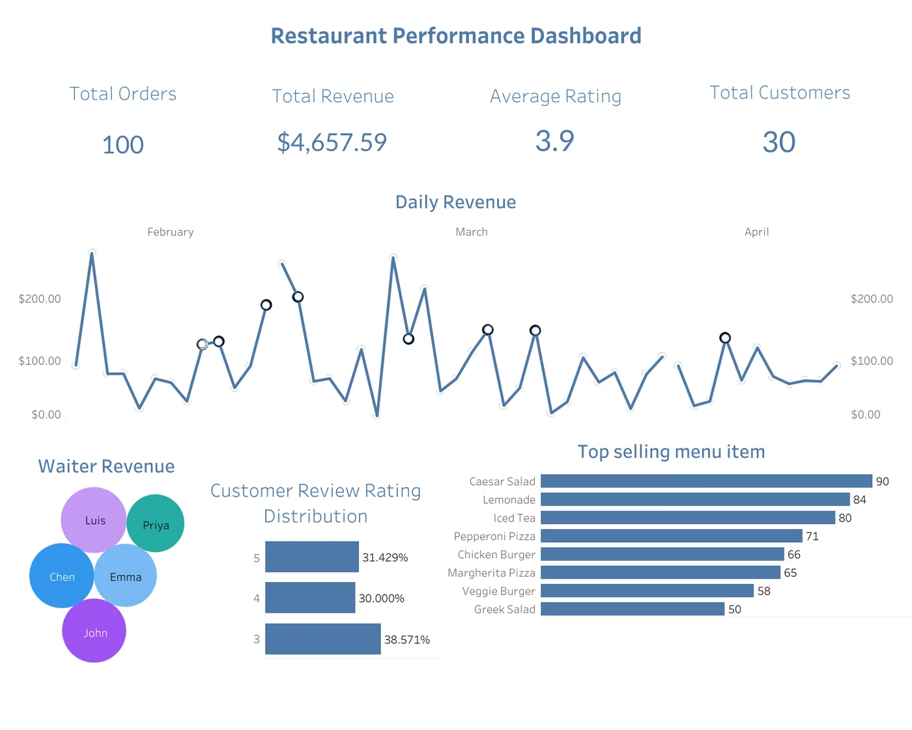

Fig. 01Restaurant performance
2025 · Tableau, Excel

Restaurant Performance Dashboard
Three months of orders, revenue, customer ratings and staff data for a restaurant, reduced to one executive view: what sold, who sold it, and which days need explaining.
Notes on the figure
- Headline numbers first: 100 orders, $4,657.59 in revenue, a 3.9 average rating, 30 customers. The four figures a manager asks for before anything else.
- Daily revenue with the outlier days circled, so the conversation starts with the dates that break the pattern.
- Top sellers by volume. Caesar salad and the drinks outsell every pizza on the menu.
- Revenue by waiter, sized by contribution. This is where the gap in staff performance became visible.